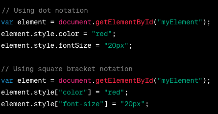

In JavaScript style property is ued to access or modify the inline CSS.
you can access the style property of an element using dot notation or square bracket notation.

In above example: getElementById is used to retrieve an element from HTML document with specified ID myElement. we can use the Dot notitaion or baracket nototation of style with css.